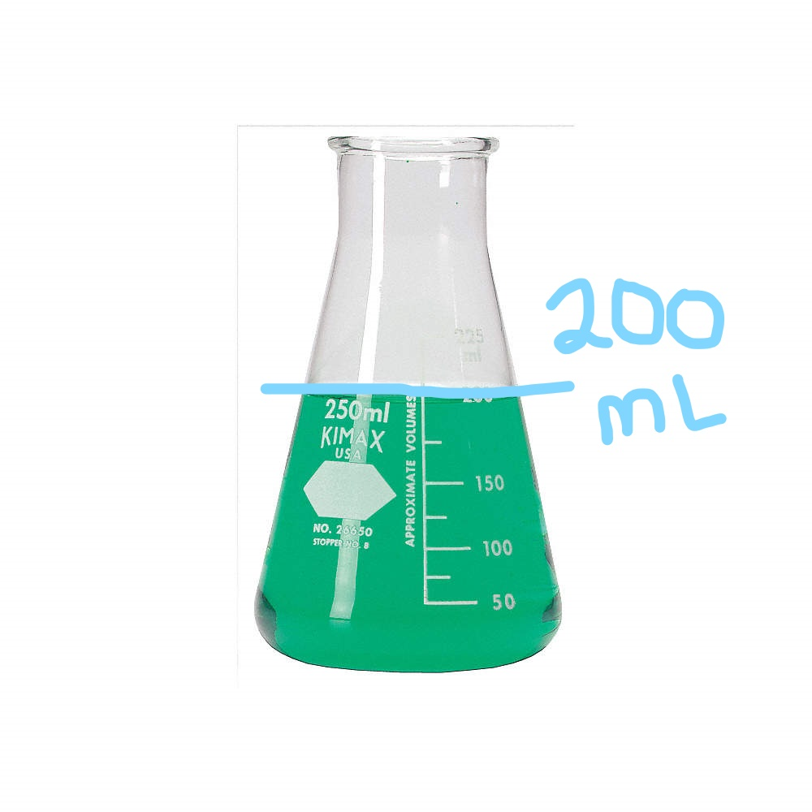

Measurement Lab
Menu
Erlenmeyer Flask
A erlenmeyer flask is device used to measure the volume of a liquid. As with beakers and graduated cylinders, the liquid can form a meniscus. Erlenmeyer flasks have a different use than beakers due to their narrow mouth. This creates a lower risk of spillage and the ability to stopper the container. Due to this, erlenmeyer flasks tend to be use for the chemical reactions.

Now you try
Read and record the volume for the small, medium and large erlenmeyer flask. Answer the questions on your lab report.